臺股期貨沒有提供免費API擷取資料，因此決定手刻一個，順便寫成教學文章，紀錄實作的過程。
這篇文章比較基礎，只是單純爬取每日行情的資料，適合有心想學爬蟲的讀者，透過實際生活上的應用，可以讓人學程式學得越起勁，這也是我喜歡程式的原因，幫助我解決生活上很多難題！
前言
期貨
期貨是一種特別的交易方式，買賣雙方簽訂合約，約定在未來指定的時間、價格或者其他交易條件交出現貨。期貨有很多種契約，今天我欲抓取的是臺股契約(TX)。臺股期貨區分兩個交易時段，依序為盤後時段及一般交易時段，盤後交易時段可視為每日交易的第一個時段，結算作業則是以一般交易時段收盤為劃分點。
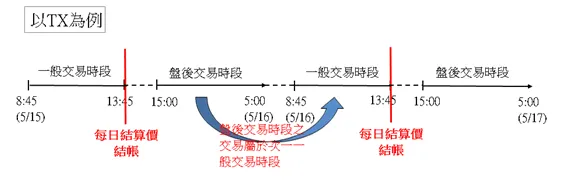
擷取資料
要紀錄每日行情也是麻煩的一件事，能不能透過程式自動擷取資料，並且幫我記錄在excel檔案裏面？下圖是台灣期貨交易行情的表格，我每天想抓的就是：
盤後交易時段 開盤價、最高價、最低價、最後成交價；
一般交易時段 開盤價、最高價、最低價、最後成交價、漲跌價、結算價。
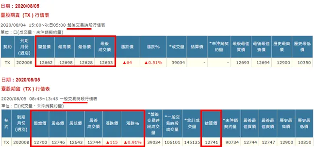
預計成果
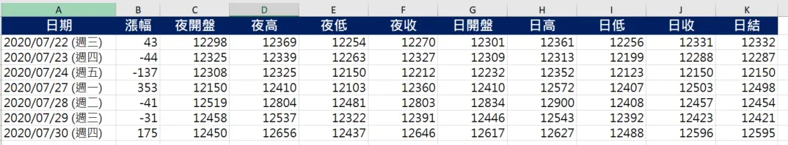
我的預計成果如上圖，當我執行Python程式時，會先判斷excel紀錄的最新日期，從最新日期的下個營業日擷取到最近一個營業日，每次都會擷取每日行情兩個時段的交易數據，這裡的『夜』、『日』，分別對應的就是盤後時段、一般時段。
這裡有值得注意的兩點：
1. 程式執行當天沒有資料，則當天不會出現紀錄
ex：在2020/7/25 (週六)，臺灣期貨交易所公休，因此當天就不會寫入excel檔案。
2. 程式會自動判斷最新的紀錄日期，逐一擷取補齊至今。
ex：平日上班繁忙忘了更新，excel最新紀錄是2020/7/27 (週一)，程式執行會擷取2020/7/28 (週二)、2020/7/29 (週三)…執行到今天日期為止。如此就可以避免中間有缺漏情況。
Python代碼實現
以下講解Python代碼實現，以 2020/8/05 的盤後交易時段為例。
檢查查詢表格的 html 元素
在查詢表格按右鍵，選擇"檢查"，右邊會顯示表格的 html 元素，從中得知這表格是以 post 方式發出請求，紀錄每個輸入框的 name 及 value。
表單元素
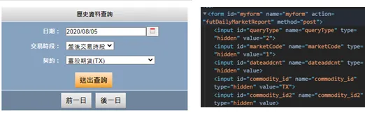
表格對應的名稱、值
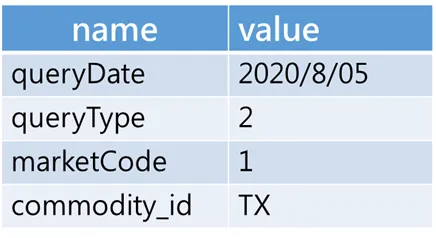
檢查行情表格的 html 元素
在臺股期貨 (TX ) 行情表按下右鍵，選擇"檢查"，右邊會顯示如下的html元素
行情表格的元素
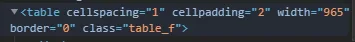
檢查發現，行情表格的class是 table_f，用 Ctrl+F 搜尋看看有幾個吻合：
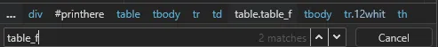
只有兩個吻合，一個是我們要抓的 臺股期貨 (TX) 行情表、另一個是價差行情表。待會我們用class名稱作為條件搜尋時，就擷取第一張表格即可。
爬取
至此，我們已經成功找到元素了，接著就是requests套件發出post請求，並且使用熱騰騰的濃湯(BeautifulSoup)為我們解析網頁元素，如果解析後結果的table變數，是如下圖所示，那就表示成功爬取囉！
import requests
from bs4 import BeautifulSoup
url ="https://www.taifex.com.tw/cht/3/futDailyMarketReport"
myobj = {'queryDate': "2020/8/05", "MarketCode":"1","commodity_id":"TX","queryType":2}
response = requests.post(url, data = myobj)
soup = BeautifulSoup(response.text,features="html.parser")
table = soup.find("table",class_="table_f")
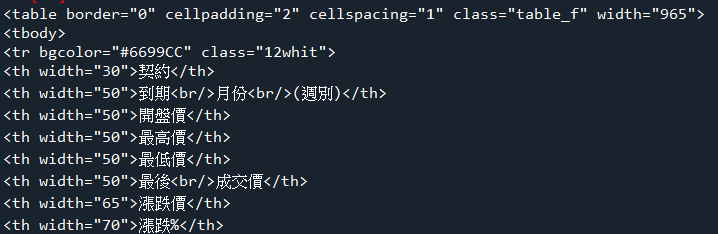
萃取交易行情
擷取整張表格，接著我們進行細部的資料擷取，tr 表示表格的每一列，我們要擷取的是表格的第二列，因此索引值是 1(python索引從0開始)，代碼是 find_all("tr")[1]，再繼續使用 find_all("td") 擷取該列所有的儲存格。
row = table.find_all("tr")[1].find_all("td")
row = [r.text.strip() for r in row]
萃取行情表格的第二列
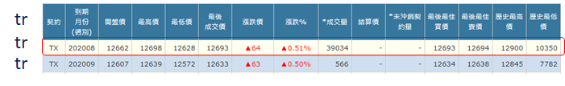
row
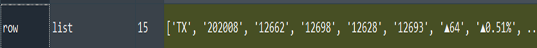
截至目前為止，盤後交易時段已經順利擷取，至於一般交易時段方法如出一轍，唯一差異只是 MarketCode，盤後交易是1；一般交易是0。我們將其包成函式方便調用：
def get_daily_quotes(date,market_code):
"""
market_code
1=盤後
0=一般
"""
myobj = {'queryDate': date, "MarketCode":market_code,"commodity_id":"TX","queryType":2}
response = requests.post(url, data = myobj)
soup = BeautifulSoup(response.text,features="html.parser")
table = soup.find("table",class_="table_f")
if not table:return None
row = table.find_all("tr")[1].find_all("td")
row = [r.text.strip() for r in row]
return row
爬取一段期間的每日行情
經過上述的嘗試，我們成功抓取單日的每日行情。在寫入excel檔之前，我們回想一下剛剛提到的一個場景，平日可能上班/上課繁忙忘了每日更新，那中間遺漏的部分，豈不也要手動抓取嗎？因此首先，我們先取得 excel 的最新紀錄，確定最新的那筆紀錄的日期，再寫一個輔助函式，能夠從最新日期直到今日的這段期間，都要執行擷取每日行情的爬蟲任務，確保紀錄沒有缺漏。
註記：這裡的日期格式為年/月/日 (周幾) ，中間必須有空格，我會用 split 函式擷取前面的年/月/日，如果沒有符合格式會報錯，請參考我的 options.xlsx 檔案。
取得 excel 的最新紀錄日期
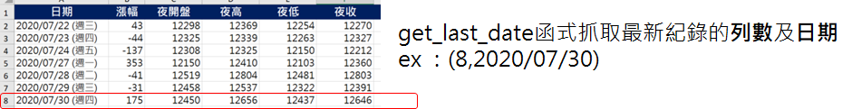
def get_last_date(ws):
print("get excel last date...")
for i in range(2,ws.max_row+2):
#inspect date
if not ws[f"A{i}"].value:
#remove weekday
last_date = ws["A"+str(i-1)].value.split(" ")[0]
#new i and last date
print(last_date)
return (i-1,last_date)
取得最新紀錄日期至今日的這段日期列表
我們需要得到最新一筆紀錄至今日這段間的確切日期，get_date_during_the_period 負責的就是這個工作，例如從 2020/7/31 開始到 2020/8/6，則會回傳這段日期的列表，就是這麼簡單。
def get_date_during_the_period(start,end):
duration = (end-start).days+1 #相差幾天(包含起始日)
if duration>0:
return [start+timedelta(days=d) for d in range(duration)]
else:
return None
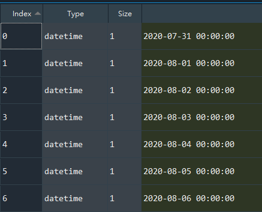
執行擷取每日行情的爬蟲任務
而 get_daily_quotes_by_date_list 則是將上面獲取的那段日期，用一個迴圈依序取出，代入到剛剛get_daily_quotes 函式，此時會得到一個列表，裡面是字典形式，包含日期、盤後交易資料、一般交易資料。
def get_daily_quotes_by_date_list(dates):
weekday_mapping = {0:"(週一)",1:"(週二)",2:"(週三)",3:"(週四)",4:"(週五)",5:"(週六)",6:"(週日)"}
daily_quotes = []
for date in dates:
d = {}
weekday = weekday_mapping[date.weekday()]
date_str = date.strftime("%Y/%m/%d")
full_date = date_str+" "+ weekday
d["date"] = full_date
d["after_hours"] = get_daily_quotes(date_str,1)
d["normal"] = get_daily_quotes(date_str,0)
time.sleep(0.5)
if (not d["after_hours"]) | (not d["normal"]):
continue
daily_quotes.append(d)
return daily_quotes
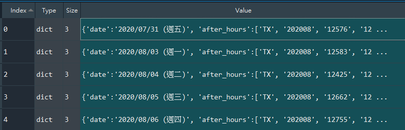
寫入excel檔案
資料已經獲取完畢，剩下來的工作便是寫入excel檔案。因為都是整數的緣故，這裡型態直接用 int 轉換，單純閱讀無所謂，但如果是要在 excel 加上自己的公式，用字串型態就會產生錯誤，因此這裡要特別小心。
Worksheet 物件支援多種索引方式，有一種是沿用 excel原生的索引風格，例如A2、B5等，這次範例便是使用該索引方式，excel的欄位順序就格外關鍵，如果調換資料就會填錯！
def record_to_excel(ws,row,daily_quotes):
#record to excel
for index,quotes in enumerate(daily_quotes):
#欲填入的列數
record_row = row+index
ws[f"A{record_row}"] = quotes["date"]
print(ws[f"A{record_row}"].value)
#盤後
ws[f"C{record_row}"] = int(quotes["after_hours"][2])
ws[f"D{record_row}"] = int(quotes["after_hours"][3])
ws[f"E{record_row}"] = int(quotes["after_hours"][4])
ws[f"F{record_row}"] = int(quotes["after_hours"][5])
#一般
ws[f"G{record_row}"] = int(quotes["normal"][2])
ws[f"H{record_row}"] = int(quotes["normal"][3])
ws[f"I{record_row}"] = int(quotes["normal"][4])
ws[f"J{record_row}"] = int(quotes["normal"][5])
quote_change = "".join([s for s in quotes["normal"][6] if (s.isdigit() or s=="-")])
ws[f"B{record_row}"] = int(quote_change)
ws[f"K{record_row}"] = int(quotes["normal"][11])
小結
今天跟各位分享期貨爬蟲的方法，人工抓取10天資料加上鍵入excel的時間要5–10分鐘，但是短短一百行程式碼，執行起來不到5秒鐘，可以省下瑣碎的時間去進行更有意義的事情，另外，這個程式可以包裝成執行檔，讓沒有Python環境的讀者也可以執行，需要再告知我囉^^ 最後，如果文末任何疏漏之處，不吝指正，我將非常感激，謝謝。